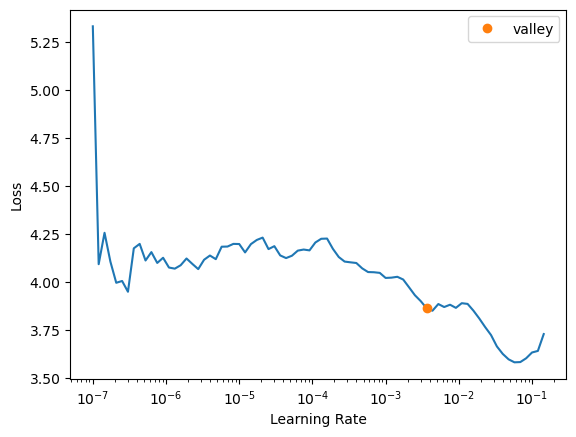

import pandas as pd
from pathlib import Path
import fastcore.all as fc
from fastai.data.all import *
from fastai.vision.all import *
import warnings
warnings.filterwarnings('ignore')Fastai example
Showing how to use fastai with a simple example.
ossl_source = '../../_data/ossl-tfm/ossl-tfm.csv'
df = pd.read_csv(ossl_source); df.head()| fname | kex | |
|---|---|---|
| 0 | 3998362dd2659e2252cd7f38b43c9b1f.png | 0.182895 |
| 1 | 2bab4dbbac073b8648475ad50d40eb95.png | 0.082741 |
| 2 | 29213d2193232be8867d85dec463ec00.png | 0.089915 |
| 3 | 8b1ee9146c026faee20a40df86736864.png | 0.135030 |
| 4 | 6e8e9d1105e7da7055555cb5d310df5f.png | 0.270421 |
df['kex'].min(), df['kex'].max()(0.0, 3.6521352871126975)df.shape(57674, 2)# image size is 750x281# ossl_source = '../../_data/ossl-tfm/ossl-tfm.csv'
# df = pd.read_csv(ossl_source); df.head()
# ossl = DataBlock(blocks=(ImageBlock, RegressionBlock),
# get_x=ColReader(0, pref='../../_data/ossl-tfm/img/'),
# get_y=ColReader(1),
# batch_tfms=Normalize.from_stats(*imagenet_stats),
# item_tfms=RatioResize(224),
# splitter=RandomSplitter(valid_pct=0.1, seed=41)
# dls = ossl.dataloaders(df)
# learn = vision_learner(dls, resnet18, pretrained=False, metrics=R2Score())
# learn.fit_one_cycle(20, 2e-3)ossl = DataBlock(blocks=(ImageBlock, RegressionBlock),
get_x=ColReader(0, pref='../../_data/ossl-tfm/img/'),
get_y=ColReader(1),
batch_tfms=Normalize.from_stats(*imagenet_stats),
item_tfms=RatioResize(224),
splitter=RandomSplitter(valid_pct=0.1, seed=41)
# batch_tfms=aug_transforms()
)ossl.summary(df)Setting-up type transforms pipelines
Collecting items from fname kex
0 3998362dd2659e2252cd7f38b43c9b1f.png 0.182895
1 2bab4dbbac073b8648475ad50d40eb95.png 0.082741
2 29213d2193232be8867d85dec463ec00.png 0.089915
3 8b1ee9146c026faee20a40df86736864.png 0.135030
4 6e8e9d1105e7da7055555cb5d310df5f.png 0.270421
... ... ...
57669 8d1089ede5cae335779364ab6d97e0dd.png 0.366362
57670 3700237aa002dee08e991b451003b3d7.png 0.485567
57671 b790da349d49885c5727a2b5fd67b13d.png 1.243033
57672 a057a7ead9eebce24d4039de7fd5e01b.png 0.381496
57673 80bf4a0dc30f60552a38193d5c09b9cd.png 0.960841
[57674 rows x 2 columns]
Found 57674 items
2 datasets of sizes 51907,5767
Setting up Pipeline: ColReader -- {'cols': 0, 'pref': '../../_data/ossl-tfm/img/', 'suff': '', 'label_delim': None} -> PILBase.create
Setting up Pipeline: ColReader -- {'cols': 1, 'pref': '', 'suff': '', 'label_delim': None} -> RegressionSetup -- {'c': None}
Building one sample
Pipeline: ColReader -- {'cols': 0, 'pref': '../../_data/ossl-tfm/img/', 'suff': '', 'label_delim': None} -> PILBase.create
starting from
fname 80b7bb4bb5d1e17262df3a12aafbbea8.png
kex 0.391434
Name: 22759, dtype: object
applying ColReader -- {'cols': 0, 'pref': '../../_data/ossl-tfm/img/', 'suff': '', 'label_delim': None} gives
../../_data/ossl-tfm/img/80b7bb4bb5d1e17262df3a12aafbbea8.png
applying PILBase.create gives
PILImage mode=RGB size=669x221
Pipeline: ColReader -- {'cols': 1, 'pref': '', 'suff': '', 'label_delim': None} -> RegressionSetup -- {'c': None}
starting from
fname 80b7bb4bb5d1e17262df3a12aafbbea8.png
kex 0.391434
Name: 22759, dtype: object
applying ColReader -- {'cols': 1, 'pref': '', 'suff': '', 'label_delim': None} gives
0.3914337946951873
applying RegressionSetup -- {'c': None} gives
tensor(0.3914)
Final sample: (PILImage mode=RGB size=669x221, tensor(0.3914))
Collecting items from fname kex
0 3998362dd2659e2252cd7f38b43c9b1f.png 0.182895
1 2bab4dbbac073b8648475ad50d40eb95.png 0.082741
2 29213d2193232be8867d85dec463ec00.png 0.089915
3 8b1ee9146c026faee20a40df86736864.png 0.135030
4 6e8e9d1105e7da7055555cb5d310df5f.png 0.270421
... ... ...
57669 8d1089ede5cae335779364ab6d97e0dd.png 0.366362
57670 3700237aa002dee08e991b451003b3d7.png 0.485567
57671 b790da349d49885c5727a2b5fd67b13d.png 1.243033
57672 a057a7ead9eebce24d4039de7fd5e01b.png 0.381496
57673 80bf4a0dc30f60552a38193d5c09b9cd.png 0.960841
[57674 rows x 2 columns]
Found 57674 items
2 datasets of sizes 51907,5767
Setting up Pipeline: ColReader -- {'cols': 0, 'pref': '../../_data/ossl-tfm/img/', 'suff': '', 'label_delim': None} -> PILBase.create
Setting up Pipeline: ColReader -- {'cols': 1, 'pref': '', 'suff': '', 'label_delim': None} -> RegressionSetup -- {'c': None}
Setting up after_item: Pipeline: RatioResize -- {'max_sz': 224, 'resamples': (<Resampling.BILINEAR: 2>, <Resampling.NEAREST: 0>)} -> ToTensor
Setting up before_batch: Pipeline:
Setting up after_batch: Pipeline: IntToFloatTensor -- {'div': 255.0, 'div_mask': 1} -> Normalize -- {'mean': tensor([[[[0.4850]],
[[0.4560]],
[[0.4060]]]], device='mps:0'), 'std': tensor([[[[0.2290]],
[[0.2240]],
[[0.2250]]]], device='mps:0'), 'axes': (0, 2, 3)}
Building one batch
Applying item_tfms to the first sample:
Pipeline: RatioResize -- {'max_sz': 224, 'resamples': (<Resampling.BILINEAR: 2>, <Resampling.NEAREST: 0>)} -> ToTensor
starting from
(PILImage mode=RGB size=669x221, tensor(0.3914))
applying RatioResize -- {'max_sz': 224, 'resamples': (<Resampling.BILINEAR: 2>, <Resampling.NEAREST: 0>)} gives
(PILImage mode=RGB size=224x73, tensor(0.3914))
applying ToTensor gives
(TensorImage of size 3x73x224, tensor(0.3914))
Adding the next 3 samples
No before_batch transform to apply
Collating items in a batch
Applying batch_tfms to the batch built
Pipeline: IntToFloatTensor -- {'div': 255.0, 'div_mask': 1} -> Normalize -- {'mean': tensor([[[[0.4850]],
[[0.4560]],
[[0.4060]]]], device='mps:0'), 'std': tensor([[[[0.2290]],
[[0.2240]],
[[0.2250]]]], device='mps:0'), 'axes': (0, 2, 3)}
starting from
(TensorImage of size 4x3x73x224, tensor([0.3914, 0.1328, 0.3051, 1.0116], device='mps:0'))
applying IntToFloatTensor -- {'div': 255.0, 'div_mask': 1} gives
(TensorImage of size 4x3x73x224, tensor([0.3914, 0.1328, 0.3051, 1.0116], device='mps:0'))
applying Normalize -- {'mean': tensor([[[[0.4850]],
[[0.4560]],
[[0.4060]]]], device='mps:0'), 'std': tensor([[[[0.2290]],
[[0.2240]],
[[0.2250]]]], device='mps:0'), 'axes': (0, 2, 3)} gives
(TensorImage of size 4x3x73x224, tensor([0.3914, 0.1328, 0.3051, 1.0116], device='mps:0'))dls = ossl.dataloaders(df)dls.show_batch(nrows=5, ncols=1, figsize=(10, 15))
learn = vision_learner(dls, resnet18, pretrained=False, metrics=R2Score())learn.lr_find()SuggestedLRs(valley=0.00363078061491251)
learn.fit_one_cycle(20, 2e-3)| epoch | train_loss | valid_loss | r2_score | time |
|---|---|---|---|---|
| 0 | 1.010429 | 0.160208 | -0.149856 | 07:33 |
| 1 | 0.101805 | 0.105252 | 0.244579 | 07:37 |
| 2 | 0.080996 | 0.092230 | 0.338037 | 07:45 |
| 3 | 0.061543 | 0.068272 | 0.509990 | 07:48 |
| 4 | 0.061344 | 0.045711 | 0.671919 | 07:57 |
| 5 | 0.055588 | 0.044312 | 0.681960 | 08:00 |
| 6 | 0.047412 | 0.038732 | 0.722007 | 08:06 |
| 7 | 0.042374 | 0.045522 | 0.673274 | 08:08 |
| 8 | 0.037796 | 0.034118 | 0.755128 | 08:07 |
| 9 | 0.030448 | 0.033509 | 0.759500 | 08:13 |
| 10 | 0.030273 | 0.034164 | 0.754792 | 08:07 |
| 11 | 0.025239 | 0.029398 | 0.788999 | 08:04 |
| 12 | 0.025301 | 0.028097 | 0.798343 | 08:02 |
| 13 | 0.022484 | 0.027496 | 0.802653 | 08:06 |
| 14 | 0.019801 | 0.025249 | 0.818778 | 08:07 |
| 15 | 0.016716 | 0.025171 | 0.819340 | 08:12 |
| 16 | 0.015120 | 0.024136 | 0.826770 | 08:10 |
| 17 | 0.012950 | 0.023746 | 0.829572 | 07:56 |
| 18 | 0.012212 | 0.024173 | 0.826501 | 07:47 |
| 19 | 0.012440 | 0.024042 | 0.827447 | 07:50 |
Evaluation
val_preds, val_targets = learn.get_preds(dl=dls.valid)# Assuming you have a new CSV file for your test data
# test_source = '../../_data/ossl-tfm/ossl-tfm-test.csv'
# test_df = pd.read_csv(test_source)
# # Create a new DataLoader for the test data
# test_dl = learn.dls.test_dl(test_df)
# # Get predictions on the test set
# test_preds, test_targets = learn.get_preds(dl=test_dl)
# # Now you can use test_preds and test_targets for further analysis# Convert predictions and targets to numpy arrays
# val_preds = val_preds.numpy().flatten()
# val_targets = val_targets.numpy()
# Create a DataFrame with the results
results_df = pd.DataFrame({
'Predicted': val_preds,
'Actual': val_targets
})
# Display the first few rows of the results
print(results_df.head())
# Calculate and print the R2 score
from sklearn.metrics import r2_score
r2 = r2_score(val_targets, val_preds)
print(f"R2 Score on validation set: {r2:.4f}") Predicted Actual
0 0.153120 0.000000
1 0.189220 0.184960
2 0.325809 0.194201
3 0.442900 0.262364
4 0.335543 0.355799
R2 Score on validation set: 0.8270val_preds_np = val_preds
val_targets_np = val_targets
# Apply the transformation: exp(y) - 1
val_preds_transformed = np.exp(val_preds_np) - 1
val_targets_transformed = np.exp(val_targets_np) - 1
# Create a DataFrame with the results
results_df = pd.DataFrame({
'Predicted': val_preds_transformed,
'Actual': val_targets_transformed
})
# Display the first few rows of the results
print(results_df.head())
# Calculate and print the R2 score
from sklearn.metrics import r2_score
r2 = r2_score(val_targets_transformed, val_preds_transformed)
print(f"R2 Score on validation set (after transformation): {r2:.4f}")
# Calculate and print the MAPE, handling zero values
def mean_absolute_percentage_error(y_true, y_pred):
non_zero = (y_true != 0)
return np.mean(np.abs((y_true[non_zero] - y_pred[non_zero]) / y_true[non_zero])) * 100
mape = mean_absolute_percentage_error(val_targets_transformed, val_preds_transformed)
print(f"Mean Absolute Percentage Error (MAPE) on validation set: {mape:.2f}%")
# Calculate and print the MAE as an alternative metric
from sklearn.metrics import mean_absolute_error
mae = mean_absolute_error(val_targets_transformed, val_preds_transformed)
print(f"Mean Absolute Error (MAE) on validation set: {mae:.4f}") Predicted Actual
0 0.165464 0.00000
1 0.208306 0.20317
2 0.385151 0.21434
3 0.557217 0.30000
4 0.398699 0.42732
R2 Score on validation set (after transformation): 0.6978
Mean Absolute Percentage Error (MAPE) on validation set: 47.85%
Mean Absolute Error (MAE) on validation set: 0.1948plt.figure(figsize=(6, 6))
# Use logarithmic bins for the colormap
h = plt.hexbin(val_targets, val_preds, gridsize=65,
bins='log', cmap='Spectral_r', mincnt=1,
alpha=0.9)
# Get the actual min and max counts from the hexbin data
counts = h.get_array()
min_count = counts[counts > 0].min() # Minimum non-zero count
max_count = counts.max()
# Create a logarithmic colorbar
cb = plt.colorbar(h, label='Count in bin', shrink=0.73)
tick_locations = np.logspace(np.log10(min_count), np.log10(max_count), 5)
cb.set_ticks(tick_locations)
cb.set_ticklabels([f'{int(x)}' for x in tick_locations])
# Add the diagonal line
min_val = min(val_targets.min(), val_preds.min())
max_val = max(val_targets.max(), val_preds.max())
plt.plot([min_val, max_val], [min_val, max_val], 'k--', lw=1)
# Set labels and title
plt.xlabel('Actual Values')
plt.ylabel('Predicted Values')
plt.title('Predicted vs Actual Values (Hexbin with Log Scale)')
# Add grid lines
plt.grid(True, linestyle='--', alpha=0.65)
# Set the same limits for both axes
plt.xlim(min_val, max_val)
plt.ylim(min_val, max_val)
# Make the plot square
plt.gca().set_aspect('equal', adjustable='box')
plt.tight_layout()
plt.show()
# Print the range of counts in the hexbins
print(f"Min non-zero count in hexbins: {min_count}")
print(f"Max count in hexbins: {max_count}")Min non-zero count in hexbins: 1.0
Max count in hexbins: 180.0path_model = Path('./models')
learn.export(path_model / '0.pkl')Inference
ossl_source = Path('../../_data/ossl-tfm/img')
learn.predict(ossl_source / '0a0a0c647671fd3030cc13ba5432eb88.png')((0.5229991674423218,), tensor([0.5230]), tensor([0.5230]))df[df['fname'] == '0a0a0c647671fd3030cc13ba5432eb88.png']| fname | kex | |
|---|---|---|
| 28867 | 0a0a0c647671fd3030cc13ba5432eb88.png | 0.525379 |
np.exp(3) - 119.085536923187668Experiments:
Color scale: viridis | Discretization: percentiles = [i for i in range(60, 100)]
| Model | Image Size | Learning Rate | Epochs | R2 Score | Time per Epoch | Finetuning | with axis ticks |
|---|---|---|---|---|---|---|---|
| ResNet-18 | 100 | 1e-3 | 10 | 0.648 | 05:12 | No | Yes |
| ResNet-18 | 224 | 2e-3 | 10 | 0.69 | 07:30 | No | Yes |
| ResNet-18 | 750 (original size) | 1e-3 | 10 | 0.71 | 36:00 | No | Yes |
| ResNet-18 | 224 | 2e-3 | 20 | 0.704 | 07:30 | No | Yes |
| ResNet-18 | 224 | 2e-3 | 10 | 0.71 | 07:00 | No | No |
Discretization: percentiles = [i for i in range(20, 100)]
| Model | Image Size | Learning Rate | Epochs | R2 Score | Time per Epoch | Finetuning | with axis ticks | colour scale |
|---|---|---|---|---|---|---|---|---|
| ResNet-18 | 224 | 2e-3 | 10 | 0.7 | 05:12 | No | No | viridis |
| ResNet-18 | 224 | 3e-3 | 10 | 0.71 | 05:12 | No | No | jet |
From now on with axis ticks is always No.
Discretization: esimated on 10000 cwt power percentiles [20, 30, 40, 50, 60, 70, 80, 90, 95, 97, 99]
| Model | Image Size | Learning Rate | Epochs | R2 Score | Time per Epoch | Finetuning | remark | colour scale |
|---|---|---|---|---|---|---|---|---|
| ResNet-18 | 224 | 2e-3 | 10 | 0.71 | 05:12 | No | None | jet |
| ResNet-18 | 224 | 2e-3 | 10 | 0.685 | 05:12 | No | y range added | jet |
From now on random splitter with 10% validation and random seed 41.
Discretization: esimated on 10000 cwt power percentiles [20, 30, 40, 50, 60, 70, 80, 90, 95, 97, 99]
| Model | Image Size | Learning Rate | Epochs | R2 Score | Time per Epoch | Finetuning | remark | colour scale |
|---|---|---|---|---|---|---|---|---|
| ResNet-18 | 224 | 2e-3 | 10 | 0.7 | 05:12 | No | Pre-train & normalize: True | jet |
| ResNet-18 | 224 | 2e-3 | 10 | 0.796 | 08:12 | No | No Pre-train | jet |
| ResNet-18 | 224 | 3e-3 | 10 | 0.7 | 05:12 | No | Pre-train & normalize: False | jet |
| ResNet-18 (id=0) | 224 | 2e-3 | 20 | 0.829 | 08:12 | No | No Pre-train (try 18 epochs) | jet |